Contents
QMCPy¶
Integrand¶
The function to integrate Abstract class with concrete implementations
Linear: 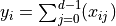
Keister: 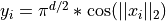
Asian Call
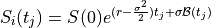
discounted call payoff

discounted put payoff

True Measure¶
General measure used to define the integrand Abstract class with concrete implementations
Uniform: 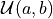
Gaussian: 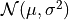
Brownian Motion: 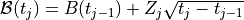 for

Discrete Distribution¶
Sampling nodes IID or LDS (low-discrepancy sequence) Abstract class with concrete implementations
IID Standard Uniform: 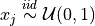
IID Standard Gaussian: 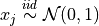
Lattice (base 2): 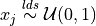
Sobol (base 2):
Stopping Criterion¶
The stopping criterion to determine sufficient approximation Abstract class with concrete implementations Central Limit Theorem (CLT) 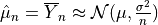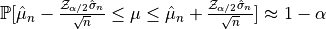
CLT for 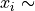 iid
CLT Repeated for
 lds
lds
Accumulate Data Class¶
Stores data values of corresponding stopping criterion procedure Abstract class with concrete implementations
Mean Variance Data (Controlled by CLT)
Mean Variance Repeated Data (Controlled by CLT Repeated)
Integrate Method¶
Repeatedly samples the integrand at nodes generated by the discrete distribution and transformed to mimic the integrand’s true measure until the Stopping Criterion is met Function with arguments:
Integrand object
True Measure object
Discrete Distribution object
Stopping Criterion object